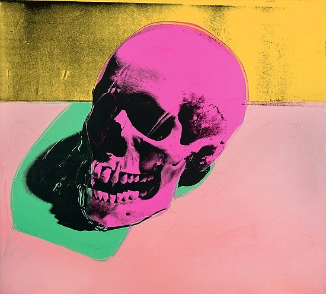
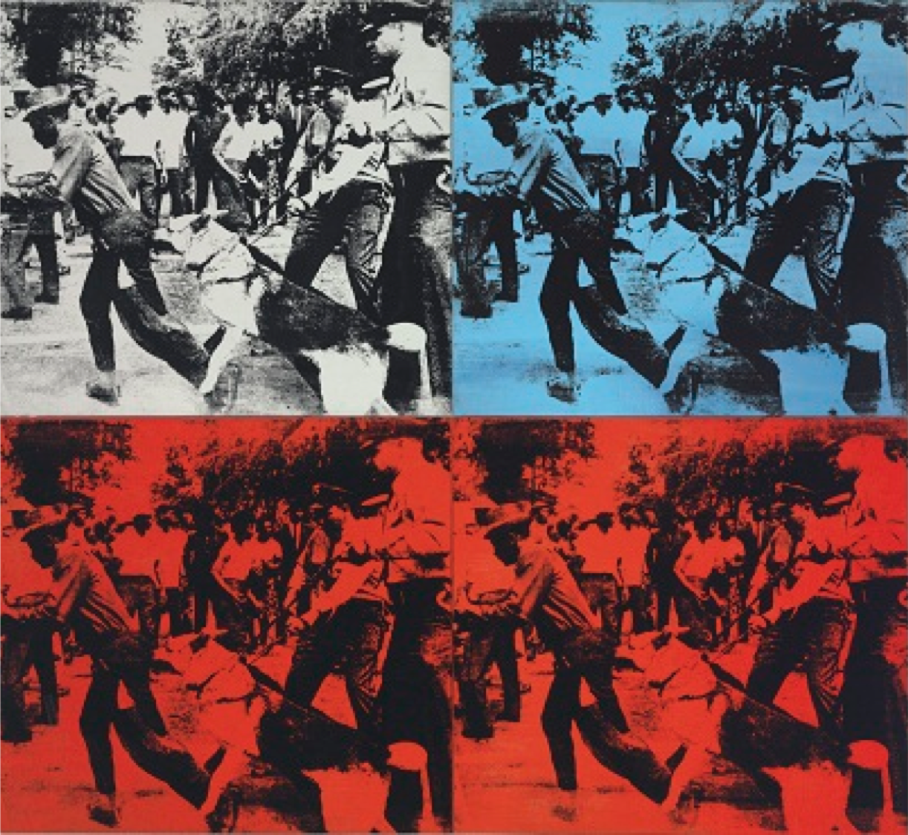
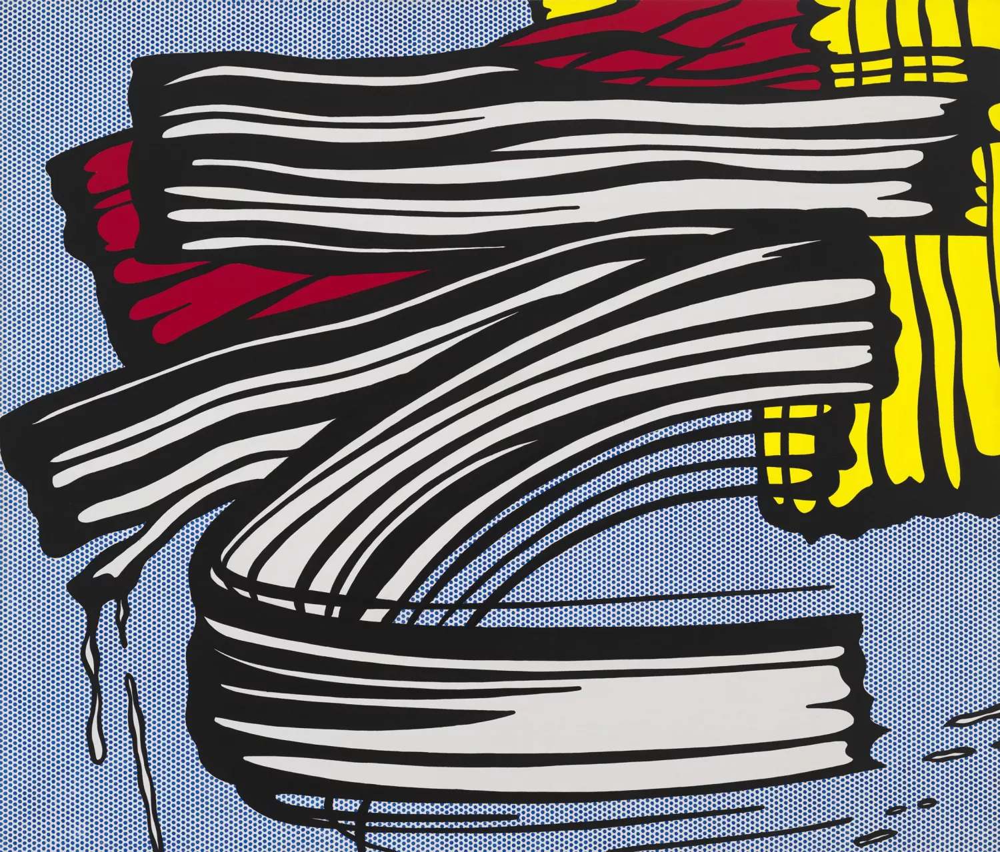
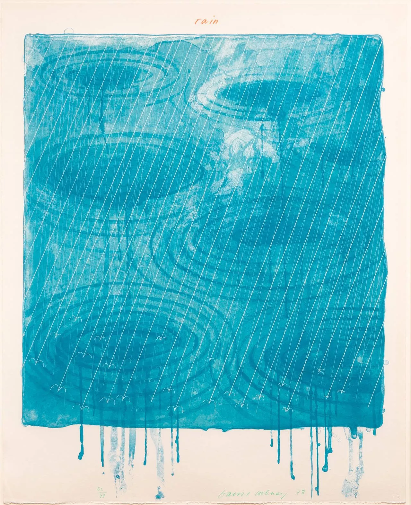

MARILYN (1962)

En 1962 Marilyn Monroe murió en la plenitud de su juventud. Marilyn se había convertido en un ícono de la cultura pop norteamericana, y ejercía una enorme influencia en el imaginario social.
Pero no por ello Marilyn fue plenamente valorada. Al contrario. Warhol inicia una serie de retratos de Marilyn Monroe aplicando la técnica de la serigrafía, en la que de una imagen original se imprimen las siguientes.
Mientras más veces se reproduce la imagen, más se desdibuja o se deforma.
CALAVERA (1976)

Al igual que podía colorear el busto de una vaca, también podía dotarle de cierta fantasía a la muerte. En este caso, a unas calaveras.
Esta obra (”Skulls” en su título en inglés) es un recordatorio que Warhol hizo respecto a nuestra mortalidad. Y lo realizó de una manera, para algunos, macabra, pues hay quienes consideran que la sombra que proyectan estos cráneos son el perfil de un bebé.
Asimismo, hay expertos que fundamentan el origen de esta obra en 1968, cuando el artista fue víctima de un atentado con armas.
LATAS DE SOPA CAMPBELL’S (1962)

32 lienzos con cada una de las variedades y sabores de Sopa Campbell de 1962.
Warhol era un ilustrador comercial al máximo y de la seriedad y elitismo del expresionismo abstracto. Para él el arte era un juego, no un ente místico, y debería estar al alcance de todos, no sólo de unos cuantos eruditos.
La propia cultura supura arte. La cultura popular fabrica sus propios iconos estéticos y Andy fue de los primeros no sólo en verlos como Arte con mayúsculas, sino en fabricarlos en masa, comercializarlos, como si de un producto más de consumo se tratara.
BIRMINGHAM RACE RIOT (1964)

La serigrafía fotográfica de Andy Warhol Birmingham Race Riot revela un momento durante una manifestación por los derechos civiles de 1963 cuando policías blancos y sus perros atacaron a manifestantes negros.
La fotografía original fue una de las tres tomadas por el fotógrafo Charles Moore que aparecen en la revista LIFE. Warhol se apropió de la imagen original, pero la amplió, la recortó y optó por retratarla como una imagen especular del original para que los policías aparecieran del lado izquierdo en lugar del derecho.
También enfatizó significativamente el contraste tonal del blanco y negro, creando grandes áreas de negro denso que alguna vez fueron moduladas con gris o blanco. Su recorte enfatizó el movimiento frenético y el ruido en el momento.
MAO (1972)
Mao Tse Tung aparece pintarrajeado como una furcia en este icónico retrato del verdadero Rey del Pop, Andy Warhol.
Un enorme soporte para mostrar únicamente su cara, como se hacía en la época en el Gigante Asiático en plena Revolución Cultural China, donde el culto a la personalidad del Gran Timonel era desmesurado. Warhol sabía bien que en Estados Unidos, otro gigante político, económico y cultural, todo se podía vender, y qué mejor venta que la imagen de Mao, otra estrella pop, otra lata de sopa.
En el Auto (In the Car), 1963

In the Car es una de varias obras de Roy Lichtenstein recortadas tan de cerca, que el cabello fluye más allá de los bordes del lienzo. Como con la mayoría de sus primeros cómics románticos, este consistía en un tema de "chico y chica".
La obra se describe como una representación gráfica de un solo cuadro tenso y melodramático de un diálogo romántico entre un hombre y una mujer.
Lichtenstein pintaba sus obras en una escala monumental, muy ampliada a partir de su material de origen, o sea, las ilustraciones de historietas. Este trabajo en concreto está basado en una imagen del cómic Girls 'Romances.
Mujer en el baño (1963)

Con una paleta de colores limitada a los elementales y generalmente plasmados en gran formato, se instaura el Pop Art como un inquilino que no puede faltar en cualquier museo de arte moderno que se precie. Es el caso de Mujer en el baño, de 1963 que se encuentra en el Museo Thyssen-Bornemisza.
Este imprescindible abanderado de la elegancia, pintor, escultor y artista gráfico, nos muestra una imagen de cómic sugerente en la que la mujer con formas contorneadas y perfectos trazos contrastan con la geometría de los azulejos del fondo.
La sonrisa nos proporciona información y nos reconforta al mismo tiempo con la sensación de cotidianidad. Este cuadro incluye los ingredientes principales de su obra: temas cotidianos y universales mostrados con fuerza emocional, representados de un modo prácticamente impersonal y usando una técnica fría.
Beso V (1964)

Roy Lichtenstein (1923–1997) iba para expresionista abstracto, pero en algún momento decidió que se dedicaría a llevar al lienzo imágenes de los cómics más vendidos. De ahí esas características líneas, los colores primarios y los puntos Benday, simulando la impresión de alta velocidad.
Lo que parece ser el extracto de un cómic para chicas adolescentes– de hecho lo sacó de una viñeta del popular Girls’ Romances #97, 1963 (DC)– es en realidad un acrílico sobre lienzo hecho a mano con pincel, puntito a puntito.
El cuadro muestra a una mujer en llantos que abraza su pareja. ¿Son lágrimas de felicidad o tiene el corazón roto…? Sin las demás viñetas de la historia, no podemos más que especular. Tampoco Lichtenstein nos da una pista con uno de sus habituales bocadillos o una de sus onomatopeyas, propias del lenguaje del 9º arte.
El caso es que a Lichtenstein parecían gustarle las chicas llorando en primer plano, pues tiene varias obras sobre el tema.
Pequeña gran pintura (1965)

Lichtenstein presenta un trabajo que se asemeja a este movimiento (ya obsoleto en los 60) pero lo convierte en algo plano, sin ningún rastro de la pincelada o la mano del artista. Hasta hace su típica referencia a la impresión mecánica de puntos Ben-Day.
El artista hace así una clara parodia de sus sesudos predecesores. Su serie de "Pinceladas" (Brushstrokes), entre las que se incluye esta obra, son una evidente reacción frente a la carga emocional y la expresión espontánea de las pinceladas de tipos como Pollock, conviertiéndolas este amante de los cómics y la cultura popular estadounidense en un acto controlado.
Bedroom at Arles (1992)

En los años 90 a Lichtenstein se le dio por pintar interiores domésticos, y de paso pudo hacer un «homenaje» a uno de los pintores más famosos de la historia del arte. El artista se permite ampliar bastante la magnitud de la obra del postimpresionista (esta son más de 4 metros de ancho!) y vestirla con su estilo.
El pintor Pop actualiza el mobiliario con sillas contemporáneas (esas Cesca B32 de Marcel Breuer) y reemplaza elementos del cuadro original como las camisas de Vincent de detrás de la cama por unas camisas blancas propias de un empresario (hoy manejan ellos el arte, amigos…).
Baño de sol (1966)

En este enorme lienzo de formato cuadrado muestra a un señor con el culo al aire tomando el sol al borde de una piscina. La mitad inferior de la pintura representa aguas tranquilas realizadas con líneas curvas que se enredan unas con otras. Una forma tan simple como eficaz de plasmar esa sensación.
Un cuadro que trasmite la luz, el calor y la tranquilidad que debió sentir Hockney en su estancia en la soleada California de los años 60. Recordemos que en el año que se pintó esta obra la homosexualidad era una actividad ilegal en Inglaterra.
A Bigger Splash(1967)

En este cuadro-chapuzón no aparece ninguna figura humana. Suponemos que alguien se acaba de tirar al agua desde el trampolín por el líquido salpicando, pero quién sabe… Quizás es por eso la cierta inquietud que provoca el cuadro pese a la calma y tranquilidad de la escena.
El cuadro roza la abstracción. Los colores son totalmente planos y apenas deja algunas sombras y reflejos para insinuar la figuración. Hockney trabajó el acrílico con rodillo y pincel para conseguir esos acabados, dándole el protagonismo al agua elevándose, que recuerda inevitablemente al expresionismo abstracto, movimiento contra el que surgió el Pop.
El contraste entre la inmediatez del chapuzón y la quietud del resto de la escena es lo que buscaba el artista, que según dicen nació con sinestesia, viendo colores en respuesta a estímulos musicales.
Piscina con dos figuras California Dreamin' (1972)

En esta obra en concreto, Hockney opta por crear unas hipnóticas ondulaciones, con reflejos y sombras. Un agua que parece cálida y en un leve y agradable movimiento. Mención especial para el paisaje de fondo, todo un vergel de árboles y colinas. Verde y azul que contrastan con ese rojo.
Porque vemos a alguien buceando en la piscina y el tío de rojo está observándolo. Se trata de un retrato de Peter Schlesinger, pintor y ex-amante de Hockney. Al parecer ambos habían roto su relación un año antes y hay quien interpreta esta pintura como una metáfora de la nueva vida de Schlesinger, mostrando a otro tío nadando hacia él. Así Hockney reconoce el amor perdido y le desea felicidad con una nueva pareja para su ex.
Lluvia (1973)

A Hockney le llamó la atención el intento de representar condiciones atmosféricas intangibles, algo que ya habían tratado en profundidad artistas como Claude Monet. Inicialmente Hockney planeó una serie más grande que incluiría otros efectos climatológicos como gotas de escarcha o el arco iris, pero estos nunca se llegaron a materializar.
Si consiguió hizo esta litografía en color azul (y título en rojo) que representa a la lluvia cayendo sobre un volumen de agua. Conociendo al artista, apostaríamos el buen nombre de esta web a que esta lluvia cae sobre una piscina.
El sol de California fue una de las cosas que fascinó al artista británico, acostumbrado al cielo gris de su tierra natal, pero sobre todo le volvían loco las piscinas californianas y esos cuerpos de jovencitos bronceándose.
American Collectors (1968)

Uno de los artistas más versátiles e inventivos de Inglaterra de la era de la posguerra, el pintor, grabador, escenógrafo y fotógrafo David Hockney se instaló en Los Ángeles en 1964. Desde entonces, su trabajo ha reflejado a menudo, con ingenio e incisión, la llanura bañada por el sol.
Quizás el ejemplo más icónico de un grupo de retratos dobles de amigos y socios de la década de 1960, esta gran pintura representa a los coleccionistas de arte contemporáneo Fred y Marcia Weisman en el jardín de esculturas de su casa en Los Ángeles. Como dijo Hockney: “El retrato no estaba solo en los rostros, estaba en todo el escenario”.
Tan implacablemente rígidos y quietos como los objetos que los rodean, la pareja se mantiene aparte, la postura de él resuena en el tótem a la derecha, la de ella en la escultura figurativa detrás de ella. La boca distorsionada de la Sra. Weisman también refleja la del tótem. La sombra del Sr. Weisman cae posesivamente sobre la escultura abstracta a sus pies.